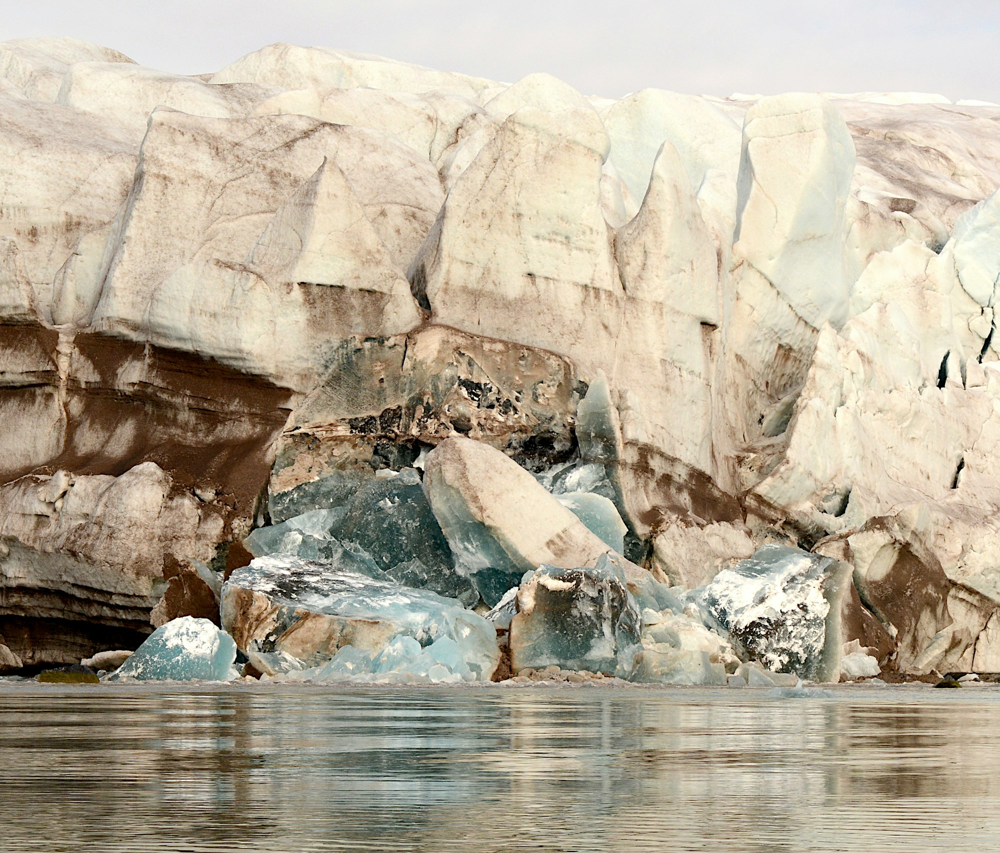
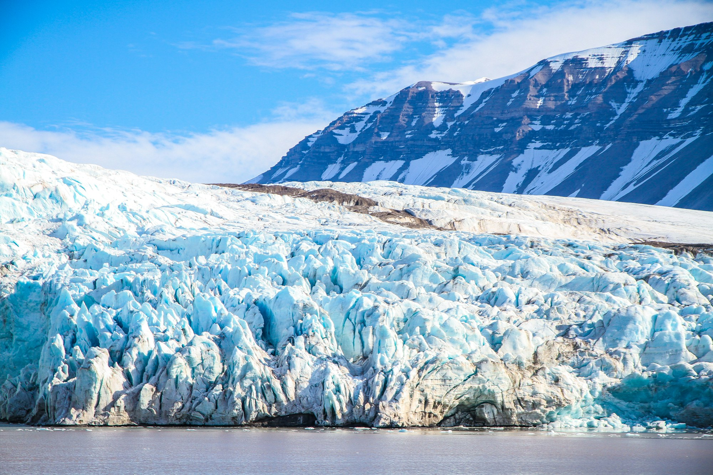

01
Ice
A surface that forms, fractures, drifts, and melts.
A field guide to the wild
Frozen systems at the edge of survival.
Discover the wild ↓01 / The environment
Here, ice is more than a surface. It is habitat, a seasonal clock, and a boundary between ocean and atmosphere.
Sea ice grows through the polar winter and retreats with summer light. Life follows that rhythm: algae beneath the ice, fish in cold water, and animals traveling between feeing grounds.

02 / In perspective
Bright ice reflects sunlight. Open water absorbs more of it. As the balance between the two shifts, the consequences reach beyond the polar horizon
03 / A connected system
01
A surface that forms, fractures, drifts, and melts.
02
Long darkness gives way to a season of almost continuos daylight.
03
Survival depends on timing, movement, and access to food.
04 / Field study
Glaciers form from accumulated snow on land. Their ice flows downhill and may break into floating pieces at the coast. Sea ice forms when seawater freezes.
Fractures and trapped sediment record a glacier’s movement. Sea ice follows the seasonal rhythm of the ocean.

05 / Look closer
No. Glaciers form from accumulated snow on land. Sea ice forms from freezing seawater. An iceberg is a piece of ice that has broken away from a glacier or ice itself.
In many Arctic landscapes, a seasonally thawed layer sits above permafrost: ground that remains frozen for at least two consecutive years. This shallow active layer influences where water collects and where plants can root.
The arrival of light, thaw, and open water changes access to food and habitat. Plants grow, insects emerge, and migrating animals arrive within a limited window.
Further reading:NPS / Permafrost ↗
Continue exploring / 02
Forest ↗